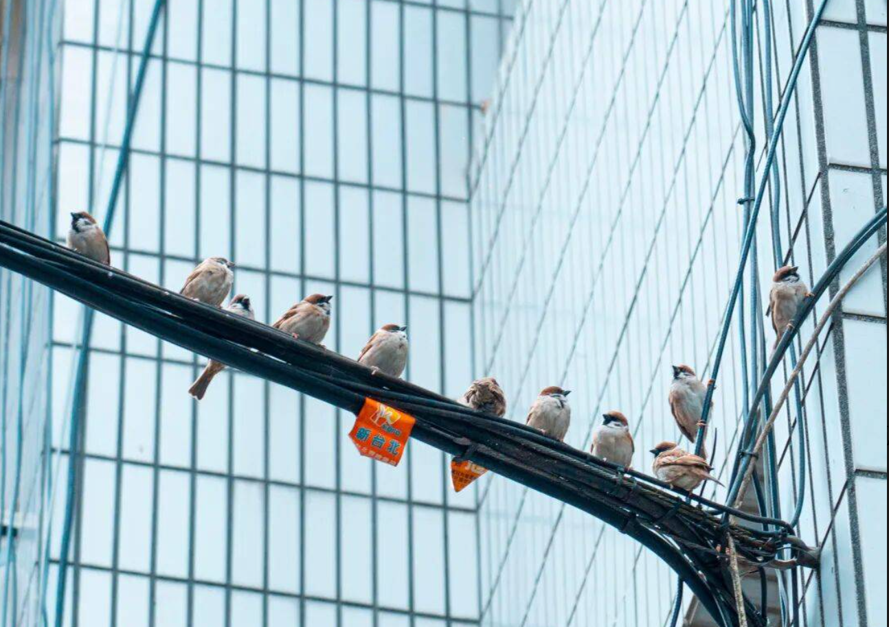
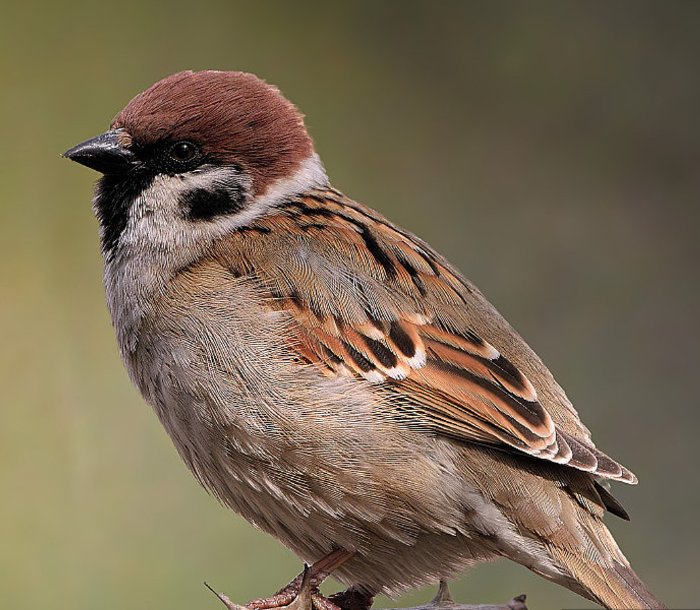
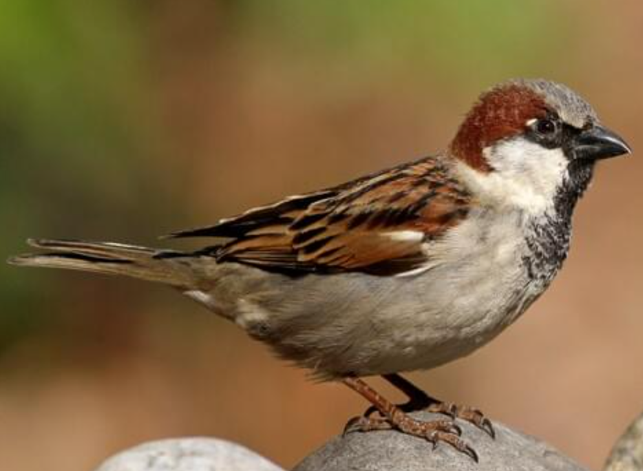
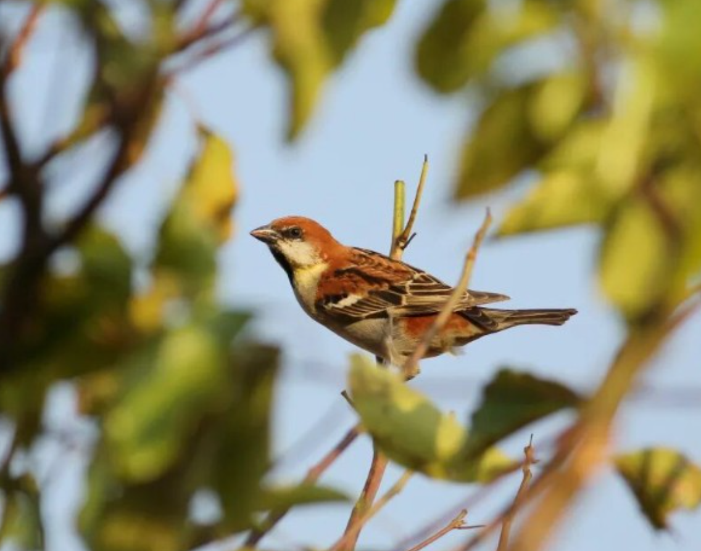
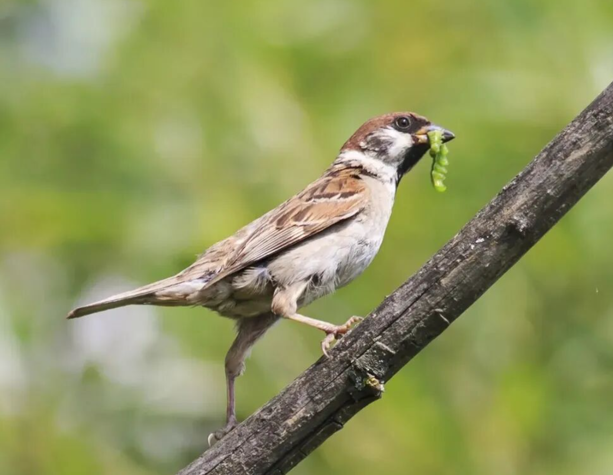

羽翼守望者


麻雀属（Passer）隶属于雀科，全球约25种，广泛分布于欧亚大陆、非洲和澳洲。体型小巧（约12-16cm），羽毛以褐、灰、白为主，雌雄异色。它们适应力极强，从农村到城市中心均有分布，以谷物、种子和昆虫为食。
繁殖期营巢于建筑物缝隙、树洞或人工巢箱中，每窝产4-6枚卵。麻雀是典型的留鸟，一年可繁殖多次。由于农药使用和城市建筑变化，部分地区种群有所波动。
📖 参考：点此处 查看国际鸟盟资料。

树麻雀是中国城市最常见的麻雀种类，体长约13-15cm，头顶栗褐色，颊部具黑色斑块。栖息于城市、乡村、农田等多种环境，以谷物和昆虫为食。
繁殖期3-7月，营巢于树洞或屋檐下，每窝产5-6枚卵。一年可繁殖2-3窝。种群数量大，但近年来部分地区因城市改造而减少。

家麻雀在中国主要分布于西部，体长约14-16cm，雄鸟头顶灰色，喉部黑色。常见于人类居住区，以谷物、种子和厨余为食。
繁殖期4-8月，营巢于建筑缝隙，每窝产4-5枚卵。适应性极强，在全球分布广泛。


麻雀属虽常见，但城市改造和农药使用对其有负面影响。保护城市绿地、减少农药使用、保留建筑缝隙对它们很重要。
📖 了解更多：点此处 查看中国林草局。